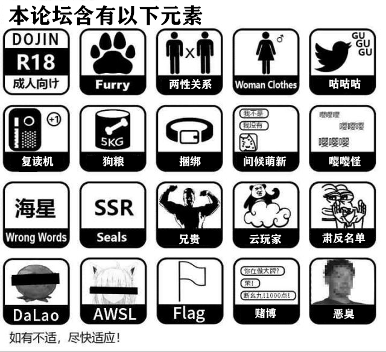

论坛
|
TOP1
I/O中断原理

[TOC] I/O中断原理 前言 在 "Windows内核原理 同步IO与异步IO" 和 "《高性能网络通讯原理》" 两篇文章中，都出现了 中断 这两个字。本篇文章会对中断操作的原理进行说明。 什么是中断 中断指当出现需要时，CPU暂时停止当前程序的执行转而执行处理新情况的程序和执行过程。即在程序运 ...查看全文
作者：杰哥很忙
TOP2
神经网络主要知识点 02
02
此篇主要是以卷积神经网络为基础，深度学习神经网络的主要知识点串讲。突出重点、快速的让你具备使用Tensorflow2.0框架的必备理论知识。 后续会持续更新YOLO, SSD， FASTER -CRNN等目标算法和ResNet, Inception，VGG,等网络知识。 ...查看全文
作者：hp_lake
TOP3
程序员着装指南
导航 如何摆脱“屌丝男”气质 程序员是? 从面试说起? 程序员着装? 中年危机or中年油腻？ 能不能用“套路”改变这个小圈子 收入 穿搭法则 修饰身材比例 颜色搭配合理 结语 程序员这个职业向来是以加班多,工作强度大,并且基本工资高著称的 。但是他(她)们更让人印象深刻的是 ...查看全文
作者：戎“码”一生
javaEE基础：（Http请求详解，握手挥手流程简介）
本文源码： "GitHub·点这里" || "GitEE·点这里" 一、Http协议简介 1、概念说明 HTTP超文本传输协议,是用于从万维网服务器传输超文本到本地浏览器的传送协议，基于TCP/IP通信协议来传递数据：HTML文件、图片、查询数据等。HTTP协议基于客户端 服务端架构模式。浏览器作为 ...查看全文
作者：知了一笑
Java的值类型和引用类型

一、问题描述 前几天因为一个需求出现了Bug。说高级点也挺高级，说白点也很简单。其实也就是一个很简单的Java基础入门时候的值类型和引用类型的区别。只是开发的时候由于自己的问题，导致小问题的出现。还好突然想起来以前看过一篇对于该问题讲解的博客，才能快速定位问题的位置。防止下次再犯，顺便也就把这个当做 ...查看全文
作者：Turtle_Zhang
mysql储存引擎介绍
mysql存储引擎简介 什么是存储引擎 mysql存储引擎是数据库如何存储数据、怎样建立索引以及如何查询更新数据等技术的实现方法，数据通过使用不同的技术存储在文件中，使用不同的存储机制、索引方式来提供不同的功能。在mysql这种关系型数据中心来说，数据是以表的方式 ...查看全文
作者：浪潮之巅
说明：本论坛为ASCII论坛，不得辱骂他人，不得水贴，不得讨论敏感话题。
编辑于2019-12-14晚
警告：

搜狗百科：https://baike.sogou.com/v53369.htm?fromTitle=ASCII
百度百科：https://baike.baidu.com/item/ASCII/309296?fr=aladdin
维基百科：https://zh.wikipedia.org/wiki/ASCII
日历
| < | 2019年12月 | > |
| 日 | 一 | 二 | 三 | 四 | 五 | 六 |
| 1 | 2 | 3 | 4 | 5 | 6 | 7 |
| 8 | 9 | 10 | 11 | 12 | 13 | 14 |
| 15 | 16 | 17 | 18 | 19 | 20 | 21 |
| 22 | 23 | 24 | 25 | 26 | 27 | 28 |
| 29 | 30 | 31 | 1 | 2 | 3 | 4 |
| 5 | 6 | 7 | 8 | 9 | 10 | 11 |